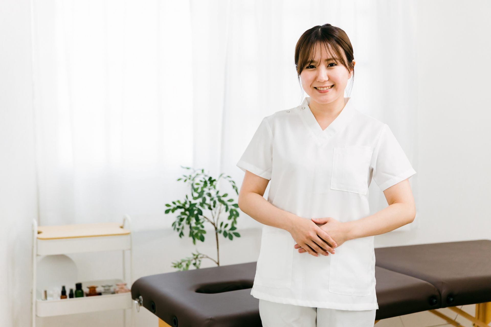

{{ e.name }}
{{ e.text }}

体の不調は、早めに気づくことで対処しやすくなるものが少なくありません。「こんなことで受診していいのかな」と思うような小さなことでも、気軽に相談できる場所でありたいと考えています。
診察を終えたとき、ご自身の体について少しでも理解が深まっているように。これからも一人ひとりとていねいに向き合ってまいります。
In-clinic tour
{{ e.text }}
{{ v.text }}
※個人の受診時の感想です。治療の効果には個人差があります。